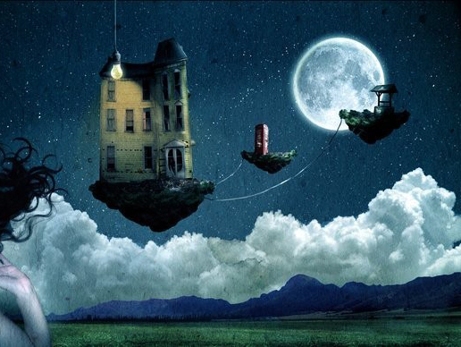

Сон с научной точки зрения

Я видел сон... безумный сон
В нем было все, о чем хочу узнать я
И где хотел бы побывать я.
Роберт Плант, рок-музыкант из группы «Led Zeppelin»
Каждый из живущих на Земле человек задумывался, что такое сон и как он возникает в голове. Парадоксально, но сколько бы времени ученые не тратили на изучение данного явления, понять этот сложное явление до конца так никому и не удалось. Как растолковать собственный сон, определяет не книга, а сам человек.
Что такое сон с научной точки зрения?
Долгое время считалось, что сон — всего лишь отдых перегруженной машины мозга, который предохраняет от преждевременного износа. Также во время сна получают отдых натруженные мышцы, кости. Тем не менее, эта простая теория не оказалась состоятельной в полной мере. Еще ХХ веке, в его середине, было выяснено, что у спящего человека метаболизм мозга ниже только на 10-15%, чем при неглубокой дреме. А уставшие за день мышцы могут прекрасно отдохнуть и просто, находясь в состоянии покоя. Выходит, что организму человека никакой нужды ровным счетом нет проводить треть собственной жизни голодным и беззащитным. Для отдыха сон вовсе не нужен! Только для 10-процентной эффективности сна естественный отбор не рисковал бы целой особью, да что там, всем человеческим видом. Ведь во время сна мы не способны среагировать на опасность адекватно, быстро сориентироваться, при этом коварный враг свои черные дела всегда вершит под покровом ночи... В таком случае, почему естественный отбор не позаботился о проблеме беззащитности спящих, почему на организме по сей день «висит» обуза обязательного отдыха, зачем нужен сон, что такое сон?
Что такое фазы сна? И что происходит с человеком в их период?
 Сну человек отдаёт почти треть всей жизни. Сон - это циклическое явление, составляющее обычно 7-8 часов в сутки, в течение которого 4-5 циклов сменяют друг друга. Каждый цикл в себя включает две фазы сна: фазу медленного и быстрого сна. В момент, когда человек засыпает, начинается медленный сон, включающий 4 стадии. Стадия первая собой представляет дремоту: сознание человека начинает «плыть», появляются различные неконтролируемые образы. Это сон неглубокий, длящийся до 5 минут, конечно, если несчастного бессонница не мучает. При второй стадии человек погружается в объятья Морфея полностью. Если дремлющего ничего не потревожит, тогда дремота перейдет во вторую фазу сна, длительностью минут 20. Третья стадия медленного сна характеризуется погружением в глубокий сон.
Сну человек отдаёт почти треть всей жизни. Сон - это циклическое явление, составляющее обычно 7-8 часов в сутки, в течение которого 4-5 циклов сменяют друг друга. Каждый цикл в себя включает две фазы сна: фазу медленного и быстрого сна. В момент, когда человек засыпает, начинается медленный сон, включающий 4 стадии. Стадия первая собой представляет дремоту: сознание человека начинает «плыть», появляются различные неконтролируемые образы. Это сон неглубокий, длящийся до 5 минут, конечно, если несчастного бессонница не мучает. При второй стадии человек погружается в объятья Морфея полностью. Если дремлющего ничего не потревожит, тогда дремота перейдет во вторую фазу сна, длительностью минут 20. Третья стадия медленного сна характеризуется погружением в глубокий сон.
Временем самого глубоко и крепкого сна, является четвертая стадия, в этот период разбудить человека довольно трудно. Во время стадий медленного сна в человеческом организме понижается температура, понижается обмен веществ, замедляются сердечный ритм и дыхание, расслабляются мышцы, глазные яблоки под закрытыми веками совершают плавные, медленные движения. В это время возрастает выработка гормона роста, происходит регенерация тканей организма. И вдруг минут через 20-30 глубокого сна мозг опять возвращается во вторую фазу неглубокого сна. Так, как будто мозг стремится проснуться, а потому начинает обратный ход. Но вместо просыпания, он переходит не к первой, а к пятой фазе сна – быстрого сна, получившего название «РЕМ-сон». Фаза медленного сна где-то через 1,5 часа сменяется фазой сна быстрого. В этот период в организме человека активизируется работа всех его внутренних органов, но одновременно мышечный тонус сильно падает и тело становится полностью обездвиженным. Во время быстрого сна в организме происходят процессы совершенно обратные медленному сну: температура повышается, сердечный ритм и дыхание усиливаются, глазные яблоки двигаться начинают резко и быстро. При полной обездвиженности спящего человека, мозг его, чрезвычайно активен. Именно сейчас человек видит большинство своих сновидений. Длится быстрый сон около 10-20 минут. Затем все вновь повторяется. После окончания фазы РЕМ, снова в строгой очередности следуют вторая, третья, а затем и четвертая фазы сна. Продолжительность быстрого сна в последних циклах, к концу ночи, увеличивается, а медленного - сокращается.
Проводимые эксперименты.
Сон для человека в некоторой степени, важнее пищи. Без пищи человек может прожить около 2 месяцев, а вот без сна очень мало. Экспериментов, которые бы выяснили жизнеспособность человека без сна, учёные не ставили. Но чтобы это понять, достаточно вспомнить казни, проводившиеся в древнем Китае, лишение сна – жесточайшие из них. Люди, которых принудительно лишали сна, не проживали дольше 10 дней. Один из экспериментов, проведенных учеными современности, показал, что у человека уже на пятые сутки ухудшается слух и зрение, нарушается координация движений, могут начаться галлюцинации, рассеивается внимание, индивидуум становится не способным более к целенаправленной деятельности. Основная масса людей за это время, потеряла в весе, несмотря на обильность питания. На 8 сутки эксперимент был остановлен по требованиям «подопытных» - люди больше не смогли. Проводились опыты, при которых лишали сна человека, чтобы выяснить значения каждой фазы сна. На определённой стадии, человека будили, затем он вновь засыпал. Результаты фиксировали при помощи специальных приборов. Как показали опыты, если лишать человека быстрого сна, то он становится агрессивным, рассеянным, снижается память, возникают страхи и галлюцинации. Таким образом, пришли к выводу, что быстрый сон необходим для восстановления функций нервной системы организма, именно ее восстановление и происходит во время быстрого сна.
Зачем нужны сны?
Пока же идет медленный сон в мозгу человека происходит обработка всей информации, полученной за день. Именно этим и объясняется интенсивная работа мозга, она необходима для упорядочения и классификации информации поступившей в мозг за время бодрствования. Новая информация при этом сопоставляется с прошлой, давно хранящейся в памяти, находя свое собственное место в системе представлений, уже существующих у человека об окружающем мире. Она требует осмысления, переработки или доработки существующих представлений. Само собой, для этого требуется активная творческая работа мозга, происходящая, как полагают, во время глубокого сна. В переработанной, упорядоченной форме, с комплексом органичных взаимосвязей с опытом прошлого, осуществляется фиксирование и дальнейшее хранение в долговременной памяти мозга новой информации. Именно поэтому искусственное лишение человека этой фазы сна приводит к различным расстройствам памяти и способно вызывать психические заболевания.


{kind=link}